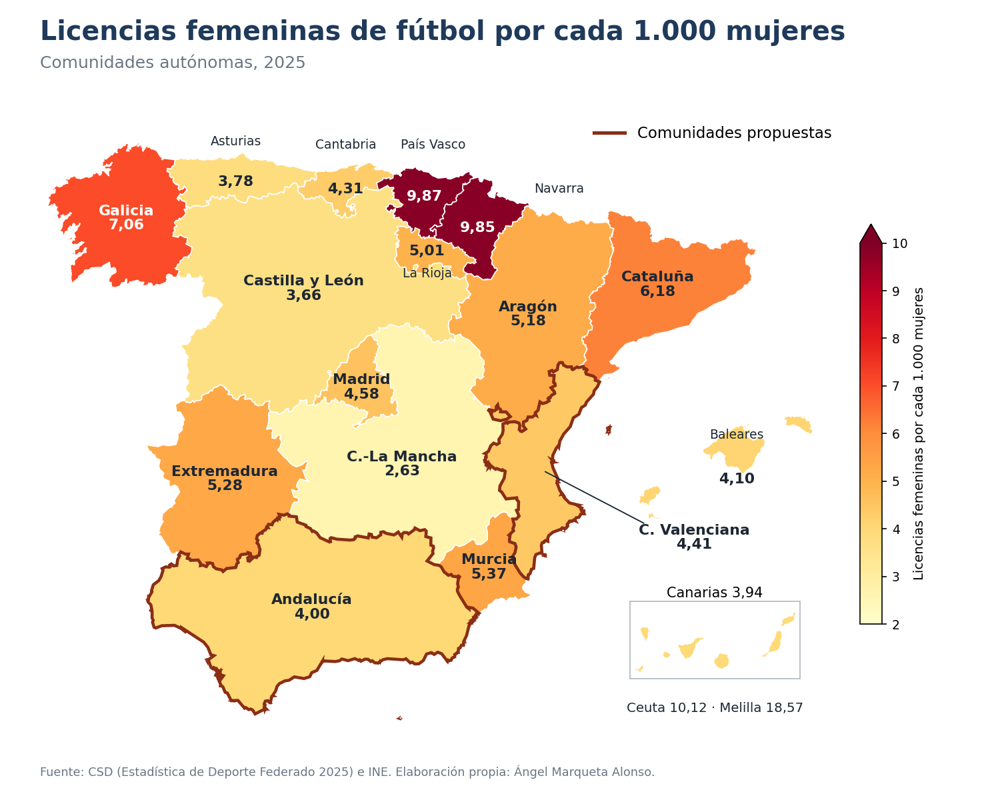

Proyectos / Datos abiertos
Datos abiertos · Fútbol femenino
Ampliar la base del fútbol femenino: por dónde empezar
El fútbol femenino crece en España, pero sigue siendo una de cada diez licencias. Con dos fuentes públicas busqué en qué comunidades tendría más sentido empezar un programa de iniciación.
- Pregunta
- ¿Dónde hay más margen para sumar jugadoras nuevas?
- Datos
- Estadística de Deporte Federado 2023 y 2025 (CSD) · Población por sexo a 1 de enero de 2025 (INE)
- Herramientas
- Python (pandas, matplotlib) · código y datos
- Contexto
- Actividad colaborativa del módulo 1 del Máster en Big Data Deportivo
Lo que encontré
Tres datos
- 127.242licencias femeninas de fútbol en 2025, un 18 % más que en 2023. Aun así, son solo el 9,96 % de todas las licencias de fútbol.
- ×3,7de diferencia entre comunidades: de 2,63 licencias por cada 1.000 mujeres en Castilla-La Mancha a 9,87 en el País Vasco.
- 28,6 %de las mujeres de España viven en Andalucía y la Comunidad Valenciana, que solo reúnen el 23,4 % de las licencias femeninas. Además, aportaron el 30,2 % del crecimiento entre 2023 y 2025.

Cómo lo hice
El criterio
Calculé tres indicadores por comunidad: licencias femeninas por cada 1.000 mujeres, porcentaje de mujeres sobre el total de licencias de fútbol y crecimiento entre 2023 y 2025. Después busqué las comunidades que estuvieran por debajo de la media española en los dos primeros y que, además, ya estuvieran creciendo.
Cumplen ocho de las diecisiete. Entre ellas elegí las dos con más población femenina, Andalucía y la Comunidad Valenciana, porque es donde un programa puede llegar a más gente. Madrid se queda fuera por muy poco: su porcentaje femenino es del 10,02 %, apenas por encima del 9,96 % nacional.
La propuesta es una prueba piloto: un grupo de iniciación por comunidad, con metas medibles (inscritas, asistencia y cuántas sacan licencia la temporada siguiente) antes de ampliarlo a las otras seis comunidades que cumplen el criterio.
Límites: una licencia no es una persona, las licencias no recogen el fútbol recreativo y la estadística no separa por edades.